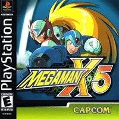

Megaman X5

Mega Man X5 é o quinto jogo da série Mega Man X, lançada pela Capcom. Foi lançado em 1998 para PlayStation, e se passa três anos depois de Mega Man X4. Foi re-lançado em 10 de Janeiro de 2006, como parte do jogo Mega Man X Collection, para Nintendo GameCube e PlayStation 2.